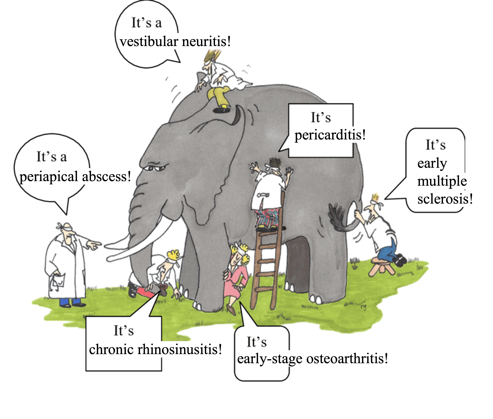

Let’s face it: the healthcare system is broken. Issues include overworked care staff and a system that generates massive amounts of data—growing larger every year—making it impossible to track patient health closely or combine data from all sources in an integrated plan for care and diagnosis. Humans can’t process it all alone. AI is the clear solution, with the potential to augment and enhance doctors’ ability to provide care.
Multimodal foundation models are the future of medical AI and medical AI is the future of healthcare.
AI is already being used in healthcare: in 2023, 223 AI-powered medical devices/software were approved by the FDA, as part of a clearly exponential trend. However, currently deployed medical AI models are inflexible and rigid, suited for narrow tasks focused on individual data modalities. These approaches succumb to the parable of the blind men and the elephant: The blind men are unimodal medical models and the patient is the elephant.

We need broadly useful models that can communicate information across all the relevant medical modalities. LLMs are already proving to be broadly useful for a variety of purposes from suggesting differential diagnoses to writing more empathetic responses to patient questions, with patients often reporting better diagnoses from models like ChatGPT than through the healthcare system. Even doctors are already using ChatGPT! Outside of LLMs, unimodal medical foundation models have been improving analysis of tissue slides, chest X-rays, and more. Our vision is to merge highly performant, specialized medical foundation models into a single holistic multimodal foundation model.
To reach this goal, we propose these three critical elements for progressing medical AI research and deployment:
open research is critical for medical domains
generalist models like ChatGPT are insufficient, models must be carefully trained with medical in mind
“truly” multimodal AI is the future
Open-source is necessary for medicine
Even though models like ChatGPT are not FDA-approved, much of the use of LLMs or foundation models in medicine right now is happening under the understanding that the “practice of medicine” is not regulated by the FDA. This means leeway is given to doctors to utilize the tools they feel allows them to give the best care to patients. Of course, these tools cannot be marketed for medical diagnosis or treatment, otherwise they need FDA approval, and it must be clear they don’t replace professional medical judgment.
Instead it’s been easier for AI tools sold to doctors to focus on administrative tasks, and there are indeed many companies focusing on this direction, like Abridge Health, Suki AI, Nabla, and Nuance Communications. While the FDA has not released specific guidance and is likely still developing a regulatory framework for LLMs in healthcare, it is not unreasonable that the FDA will impose the following requirements:
Transparency
Explainability
Privacy
Consistency
Current AI solutions often fail to meet these requirements. For example, let’s look at ChatGPT or other related proprietary LLM services:
There is no transparency regarding the kind of data the model is trained on, the sort of biases it may exhibit, etc.
Since no model weights are available, most interpretability methods for LLMs are not applicable. Only prompt-based interpretability methods which are extremely brittle can be applied.
OpenAI does have privacy provisions but this may not be true for every LLM product. Even if this is true, some healthcare providers are not comfortable sending personal health information (PHI) to the cloud, and need on-premise solutions instead.
LLMs are continuously being updated (especially through RLHF), leading to unexpected changes in behavior.
For these reasons, we are instead bullish on open-source AI for healthcare:
Open-source AI tools can be more easily audited due to the availability of model weights, dataset information, etc. This enables complete transparency that builds trust all the stakeholders involved, from doctors and patients to regulatory bodies
Interpretability methods can be more easily applied to open-source models
Open-source models can be deployed locally on-premises
Models can be static, resulting in more consistent and reliable outputs
Generalist AI vs. medical-specific AI
An ongoing question surrounding foundation models in medicine is whether generalist models trained on massive amounts of data from the web are enough or if medical AI needs separate models specially trained to handle medical inputs.
On one hand, with many clinical NLP-related tasks, generalist LLMs have shown impressive advances, often beating medical-specific LLMs. On the other hand, some medical modalities have unique data formats that generalist foundation models will not have seen or are unable to process. For example, CT scans are three-dimensional images, while digitized tissue slides are gigapixel images, so different architectures and training datasets will be needed. Additionally, while text about medical practice may be present across web crawls that generalist foundation models are trained on, large datasets of other medical modalities are typically not in the pretraining corpora of these models (such data is typically private or gated).
For these reasons, foundation models trained specifically for medicine are needed.
The bitter lesson and medical foundation models
Building medical-specific models doesn’t mean that we develop models with architectural and training approaches highly specific to the medical domain. Sure, the medical domain has some unique challenges, but the bitter lesson is also true: approaches that can be easily scaled with more compute and data will usually win.
Unfortunately, this is not the approach currently taken by a majority of the medical AI field. For example, the best paper award at the Medical Imaging with Deep Learning 2023 conference went to a paper that utilized a specialized graph attention neural network to solve the narrow task of epithelial cell classification in pathology images. But we can confidently bet that a pathology foundation model (like UNI, CONCH, Virchow, etc.) could easily be finetuned to achieve SOTA on this narrow task.
Why is this the case? Because currently most medical AI research is happening in academia which has access to limited compute and in many cases limited data. So academics spend time manually designing approaches to solve narrow tasks on their limited compute and data budget.
In our opinion, this is not the right way to do impactful medical AI research.
Truly multimodal AI is the future of medicine
From GPT-4o to Gemini to Grok-3, it is clear that multimodal AI is the future of foundation models, but it will also be the future of medical AI.
People have started developing multimodal foundation models for medicine: LLaVA-Med (Microsoft), PathChat (Harvard), CheXagent (Stanford, I was a co-author). However, most of these approaches are very limiting, basically just trying to make a multimodal chatbot for medicine. There are other sorts of multimodal models being developed like BiomedCLIP (Microsoft) and RoentGen (Stanford+Stability AI, which I was also a co-author) but these are still limited to image-text modalities.
There is more to medicine than medical images and clinical notes! There are lab tests, there are 3D images like CTs, there are time series data like ECG, there are even video data like surgical videos.
All these modalities should be processed together in order to provide more holistic care support! This is what would make a truly multimodal AI system for medicine. So far, very little research is addressing this. 1
Biomedical foundation models can enable new possibilities in medicine and research
When people think about the potential of medical foundation models, the ability to alleviate the burden on doctors and nurses is probably what comes to mind for most. But we suspect that people are not realizing that there are many other unique opportunities that medical foundation models can provide.
For example, narrow medical AI systems have already shown the potential to detect biomarkers in seemingly unrelated places. Dr. Eric Topol terms this “opportunistic AI”. For example, AI is able to detect biomarkers for heart calcium score, diabetes, kidney disease, etc. from just a retinal scan. AI is able to detect tumor gene expression (which typically requires molecular testing) directly from the tissue slide. This is all additional information that doctors typically don’t get in this way and it is worth wondering how it may affect the practice of medicine.
But none of these studies I cite use foundation models or incorporate multiple modalities. Our hypothesis is this: By using complementary information from different modalities, a multimodal medical foundation model will be able to pull out completely novel and highly predictive biomarkers for a variety of diseases that doctors would have previously been unable to identify.
Then there is the question of how does the AI even pick up on these features in the first place? Understanding this may lead to novel insights about disease. Let me give a hypothetical example.
Let’s say we give an AI model an image of a cancer tissue slide and it is able to predict that this tumor has a specific gene mutation. Maybe the AI picked up on how this gene mutation leads to a different morphology of the cancer cells or a different cell organization in the tumor microenvironment. If we could use AI interpretability approaches to determine the reason underlying its predictions, this could provide useful insight to understanding how this mutation affects the progression of this cancer.
As far as we are aware, while there is a large body of AI interpretability work applied to standard medical classification tasks, there has been limited work studying how AI is picking up on novel features like described above.
However, there has recently been an explosion of (mechanistic) interpretability research for foundation models. The most promising direction currently has been sparse autoencoders. It wouldn’t be surprising to me that it may be possible to apply these novel interpretability approaches to medical foundation models to derive novel insights about biomedicine.
So the real potential of biomedical foundation models is not about replacing or augmenting the practice of medicine, but rather enhancing it in novel ways and even generating novel biomedical knowledge.
AI must be ready to enable tomorrow’s healthcare
Healthcare right now looks a little something like this:
You don’t feel well
You go to a doctor
The doctor measures you in a pretty standard set of ways, starting out with simple point measurements of vital signs, going to blood tests, medical imaging, etc.
Based on all the recorded information the doctor makes a diagnosis and suggests treatment
However, we can see this approach to healthcare is very reactive, not proactive. But healthcare shouldn’t be sick-care! We can expect this to change in the future, though, and AI can enable this.
In order to enable a proactive approach to healthcare, we need to measure a patient’s baseline health and how it changes over time. For this reason, continuous monitoring of patient health will be crucial. We already see people using wearable sensors and continuous monitors to track vital signs like heart rate, pulse oxygen levels, glucose levels, etc. over time. In the future we may expect to see new wearables that continuously track even more biomarkers, or even portable medical imaging tools that patients use to scan themselves every day (akin to a Tricorder).
Foundation models will be necessary to identify patterns and features in extremely rich, continuously recorded, high-resolution, multi-modality patient data.
What do we need?
Summarizing all of the above, we believe this is what’s needed to advance the field of medical AI:
Build truly multimodal, highly flexible, medical-specific models
This should be done open-source for maximum transparency and flexibility
Such models will enhance how clinicians provide care and also enable tomorrow’s healthcare
In order to achieve this, we believe we need a dedicated research lab company: a DeepSeek for medical AI.
Just like any AI research lab, we need the following three components:
Data - this comes from strong partnerships with healthcare systems, medical practices, pharma companies, etc. Ideally training data comes from a variety of sources with lots of patients from different demographics: we need both scale and diversity
Compute - Training these models requires significant compute resources. This may even require more compute than typical training of an LLM or diffusion model, because medical data poses its own challenges. For example, pathology images are gigapixels in size, while CT data is three-dimensional.
Talent - We need diverse talent working on this:
- Data engineers to wrangle the medical datasets
- Research engineers that can manage large-scale foundation model training
- Clinicians to help scope research and evaluate models
So far, there are no entities that have such an environment:
Academia often has relevant domain (clinical) expertise and useful academic medical datasets but little large-scale AI training expertise and very little compute
Industry can have large-scale AI training expertise and plenty of compute, but little domain expertise and medical data
Our proposed new research lab company aims to be in-between an academic lab and a standard AI company, focusing on open research and development while also translating and deploying our developed foundation models into real-world clinical applications.
Introducing Sophont
We are founding Sophont, a new company focused on building open multimodal medical foundation models in order to build towards what we believe is the future of healthcare. We are an AI-first company building for medicine. Our goal is to become the de facto leader of impactful medical AI research and deployment.
We are not a company doing research for the sake of research. We also need to be translating that research into the hands of the people, making an actual direct impact. We are a research and translation company. We believe foundation models will become an important layer of infrastructure throughout healthcare and the life sciences, and we will help make that happen.
While brainstorming company names, my younger sister, Tiara Abraham (the creative genius of my family) suggested “Sophont.” The term, often used in science fiction, refers to an intelligent, self-aware being capable of advanced reasoning and problem-solving. Derived from the Greek sophos, meaning wise or intelligent, “Sophont” reflects our vision for medical AI—an advanced, cognitive system that enhances decision-making, drives innovation, and pushes the boundaries of AI-driven healthcare.
With over five years of experience applying generative AI to medicine, I bring a wealth of expertise, having previously served as the Research Director at Stability AI and CEO of MedARC. My co-founder, Paul Scotti, has a decade of experience in computational neuroscience, was a postdoctoral researcher at Princeton University, and served as Head of NeuroAI at Stability AI. He led the team behind the MindEye publications, which achieved state-of-the-art reconstructions of seen images from brain activity.
We are strong believers in the importance and usefulness of both open-source and open, transparent research, as evidenced by our previous experiences at MedARC. During our time at MedARC, we were able to scale up research projects to many external collaborators from around the world to make significant advances in neuroAI research. We hope to continue this science-in-the-open approach to research at Sophont to build towards the future of healthcare.
If you are interested in building and collaborating in this space, whether you’re in generative AI, hospital work, life science R&D, pharma, etc., feel free to reach out at: contact@sophontai.com
To stay updated about Sophont, follow our company on Twitter and LinkedIn.
Footnotes
As a side note, it’s worth pointing out that our vision is somewhat similar to the one laid out by Moor et al. 2023 which we also agree with heavily. They propose a medical AI that has the following characteristics: (1) the ability to carry out tasks that are dynamically specified (ex: with in-context learning), (2) the ability to support flexible combinations of data modalities, (3) formally represent medical domain knowledge and leverage it to carry out advanced medical reasoning.↩︎